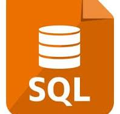

sql
SQL (Structured Query Language) is a specialized programming language used for
managing and manipulating relational databases. It allows users to create, read,
update, and delete data (commonly referred to as CRUD operations) stored in tables.
SQL is essential for querying large volumes of structured data efficiently, making
it widely used in applications that rely on databases—such as websites, business systems,
and data analysis tools. With commands like SELECT, INSERT, UPDATE, and DELETE, users can
interact with databases to retrieve specific information, modify records, or maintain data integrity.